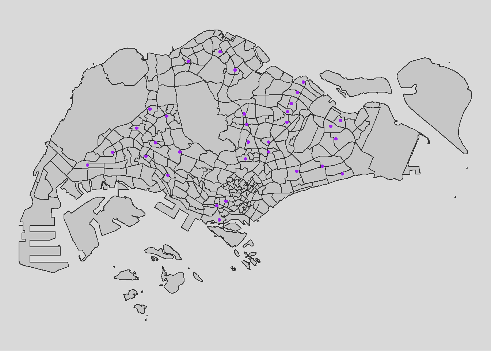
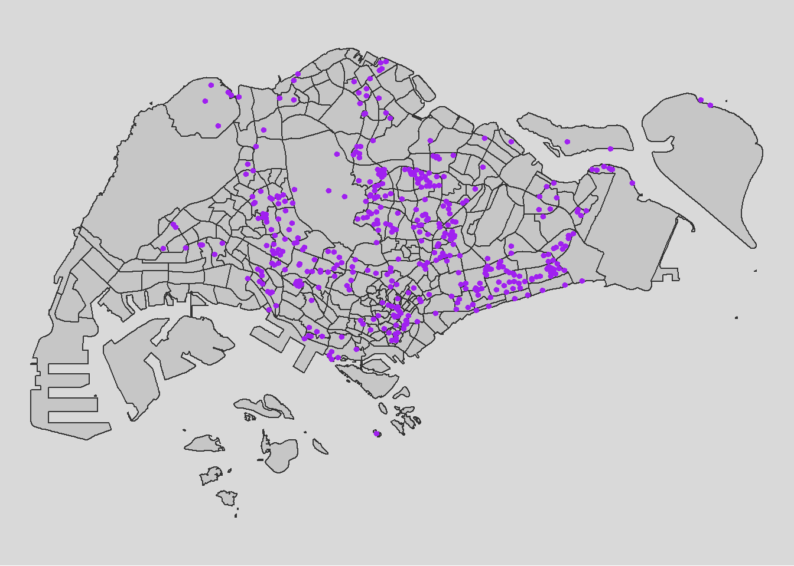
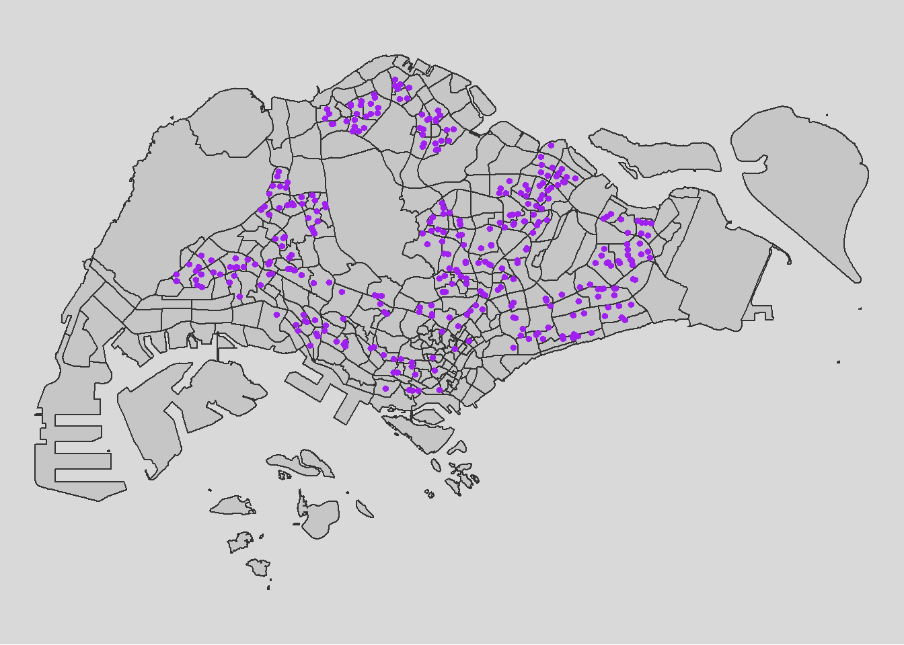
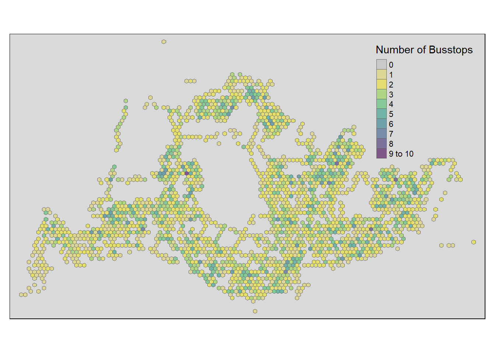
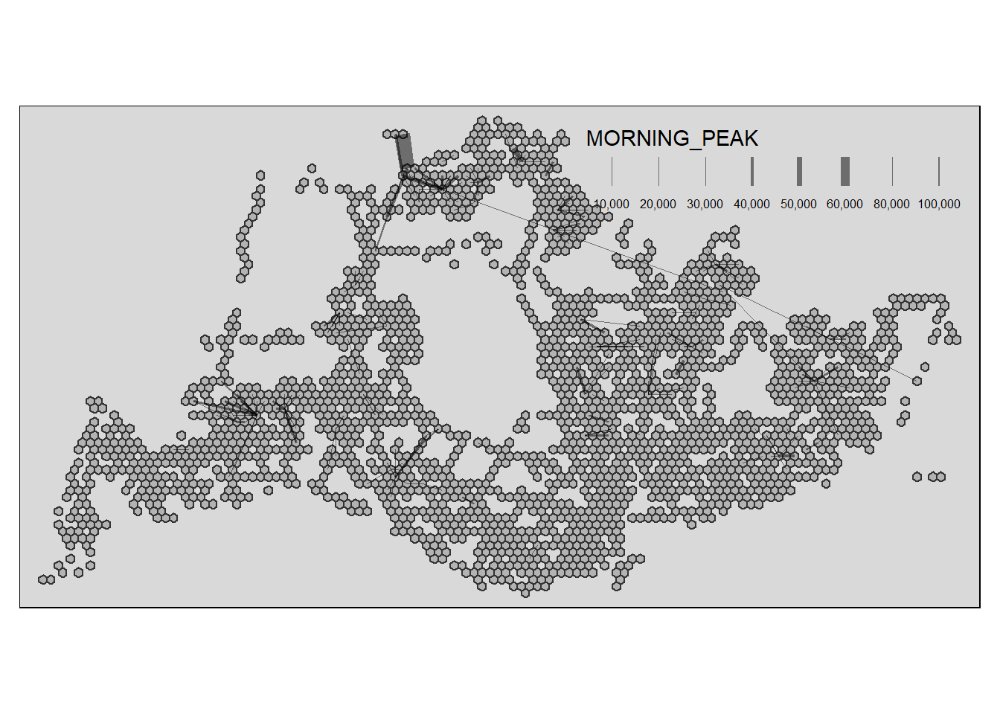
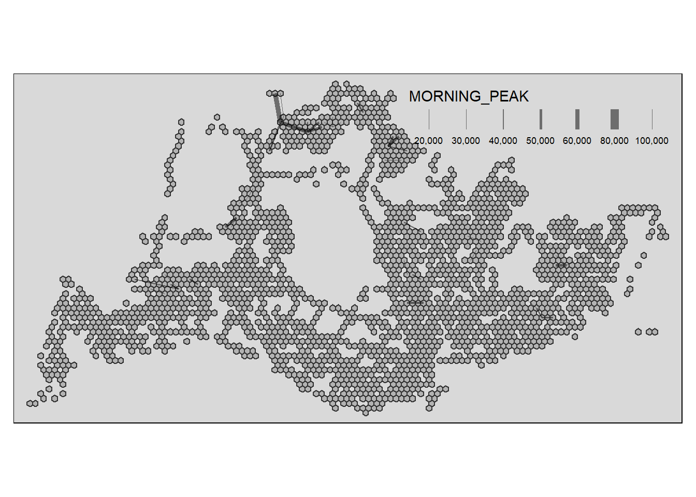
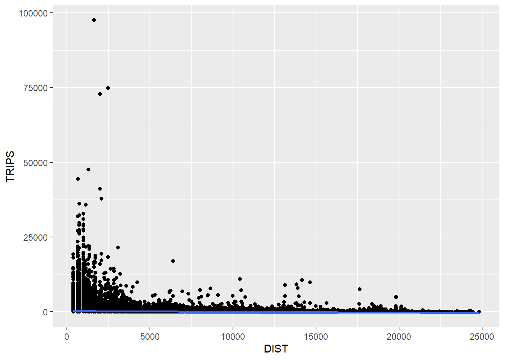
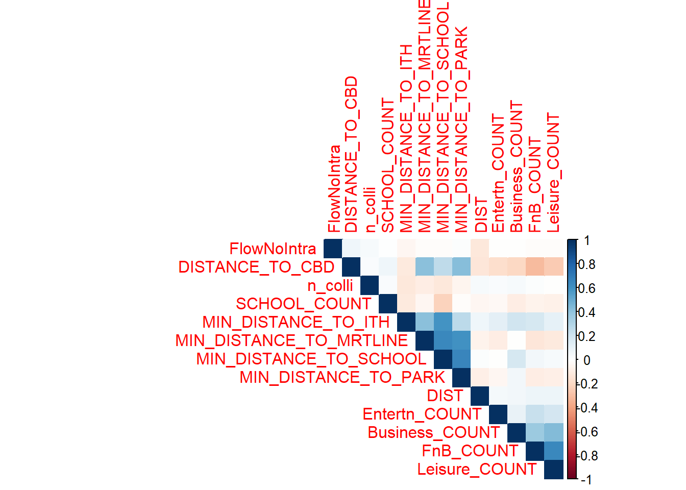

pacman::p_load(sf, sp, sfdep, tidyverse, tmap, viridis, reshape2, performance, stplanr, httr, lwgeom, DT, units)Analyzing Bus Traffic Flows in Singapore
1 Setting the Scene
What are the driving forces behind urban dwellers to weak up early in morning to commute from their home locations to their work places? What are the impact of removing a public bus service on the commuters reside along the corridor of the bus route? These and many other questions related to urban mobility are challenges faced by transport operators and urban managers.
To provide answer to this question, traditionally, commuters survey will be used. However, commuters survey is a very costly, time-consuming and laborous, not to mention that the survey data tend to take a long time to clean and analyse. As a result, it is not unusual, by the time the survey report was ready, most of the information already out-of-date!
As city-wide urban infrastructures such as public buses, mass rapid transits, public utilities and roads become digital, the data sets obtained can be used as a framework for tracking movement patterns through space and time. This is particularly true with the recent trend of massive deployment of pervasive computing technologies such as GPS on the vehicles and SMART cards used by public transport commuters.
Unfortunately, this explosive growth of geospatially-referenced data has far outpaced the planner’s ability to utilize and transform the data into insightful information thus creating an adverse impact on the return on the investment made to collect and manage this data.
2 Motivation and Objective
This take-home exercise is motivated by two main reasons. Firstly, despite increasing amounts of open data available for public consumption, there has not been significant practice research carried out to show how these disparate data sources can be integrated, analysed, and modelled to support policy making decisions.
Secondly, there is a general lack of practical research to show how geospatial data science and analysis (GDSA) can be used to support decision-making.
Hence, your task for this take-home exercise is to conduct a case study to demonstrate the potential value of GDSA to integrate publicly available data from multiple sources for building a spatial interaction models to determine factors affecting urban mobility patterns of public bus transit.
3 The Data
3.1 Open Government Data
For the purpose of this assignment, data from several open government sources will be used:
Passenger Volume by Origin Destination Bus Stops, Bus Stop Location, Train Station and Train Station Exit Point, just to name a few of them, from LTA DataMall.
Master Plan 2019 Subzone Boundary, HDB Property Information, School Directory and Information and other relevant data from Data.gov.sg.
3.2 Specially collected data
Business, entertn, F&B, FinServ, Leisure&Recreation and Retails are geospatial data sets of the locations of business establishments, entertainments, food and beverage outlets, financial centres, leisure and recreation centres, retail and services stores/outlets I compiled for urban mobility study. They are available on in the geospatial folder to Take-home Exercise 2 data folder.
HDB: This data set is the geocoded version of HDB Property Information data from data.gov. The data set is prepared using September 2021 data. If you want to prepare you own data by using the latest HDB Property Information provided on data.gov.sg, this link provides a useful step-by-step guide.
4 The Task
The specific tasks of this take-home exercise are as follows:
4.1 Geospatial Data Science
Derive an analytical hexagon data of 375m (this distance is the perpendicular distance between the centre of the hexagon and its edges) to represent the traffic analysis zone (TAZ).
With reference to the time intervals provided in the table below, construct an O-D matrix of commuter flows for a time interval of your choice by integrating Passenger Volume by Origin Destination Bus Stops and Bus Stop Location from LTA DataMall. The O-D matrix must be aggregated at the analytics hexagon level
Peak hour period Bus tap on time Weekday morning peak 6am to 9am Weekday afternoon peak 5pm to 8pm Weekend/holiday morning peak 11am to 2pm Weekend/holiday evening peak 4pm to 7pm Display the O-D flows of the passenger trips by using appropriate geovisualisation methods (not more than 5 maps).
Describe the spatial patterns revealed by the geovisualisation (not more than 100 words per visual).
Assemble at least three propulsive and three attractiveness variables by using aspatial and geospatial from publicly available sources.
Compute a distance matrix by using the analytical hexagon data derived earlier.
4.2 Spatial Interaction Modelling
Calibrate spatial interactive models to determine factors affecting urban commuting flows at the selected time interval.
Present the modelling results by using appropriate geovisualisation and graphical visualisation methods. (Not more than 5 visuals)
With reference to the Spatial Interaction Model output tables, maps and data visualisation prepared, describe the modelling results. (not more than 100 words per visual).
5 Install R Package
These are packages here necessary for this project:
sf: Handles geospatial data using the Simple Features format.
sp: Core package for spatial data structures and operations.
sfdep: Provides spatial econometrics tools, including spatial weights matrices.
tidyverse: Collection of packages for tidy data manipulation and visualization.
tmap: Creates thematic maps for effective visualization.
viridis: Offers perceptually uniform color palettes.
reshape2: Reshapes and aggregates data for better compatibility with plotting functions.
performance: Evaluates the performance of algorithms or functions.
stplanr: Provides spatial transport planning functions.
httr: Makes HTTP requests, useful for API interactions.
lwgeom: Extends sf functionality with additional geometric operations.
6 1. Importing Data
We will import the data as a first step before proceeding with data cleaning, data wrangling and data exploration for the following:
Passenger Volume, a csv file, data set downloaded from LTA DataMall
MPSZ-2019, a MULTIPOLYGON feature layer ESRI shapefile format providing the sub-zone boundary of URA Master Plan 2019
BusStop, a POINT feature layer ESRI shapefile format
Train Station, a POLYGON feature layer ESRI shapefile format
Train Station Exit Point, a POLYGON feature layer ESRI shapefile format
Train Lines, LINESTRING feature layer in KML format
Central Business District, google-sourced location
Intergrated Transoort Hub, a POINT feature layer in KML format
Parks, a POINT feature layer in KML format
HDB, a csv file, data set downloaded and prepared by Prof Kam and his students
School, a csv file downloaded from LTA MALL
Specially Collected Data, other vital data collected with POLYGON feature layer in ESRI shapefile format
Passenger Volume is an aspatial data, we can import the data simply by using the read_csv function from tidyverse package and output it as a tibble dataframe called odbus
odbus <- read_csv("data/aspatial/origin_destination_bus_202310.csv")MPSZ-2019: This data provides the sub-zone boundary of URA Master Plan 2019. Both data sets are in ESRI shapefile format. We save it as a sf data frame called mpsz using the st_read function of the sf package. The data is then geo-referenced to coordinates from the Singapore SVY21 coordinate system (EPSG: 3414).
Note that the geometry data provided in the datasets needs to be projected to local standards and should be same for all datasets. Therefore we will be have to make sure or transform all the datasets to projected CRS using Singapore SVY21 coordinate system as mentioned above.)
mpsz <- st_read(dsn = "data/geospatial", layer = "MPSZ-2019") %>%
st_transform(crs = 3414)Note st_read() function of sf package is used to import the shapefile into R as sf data frame. st_transform() function of sf package is used to transform the projection to crs 3414.
mpsz <- st_make_valid(mpsz)
length(which(st_is_valid(mpsz) == FALSE))
write_rds(mpsz, "data/rds/mpsz.rds")mpsz <- read_rds( "data/rds/mpsz.rds")Bus Stop is a geospatial data in .shp file. We save it as a sf data frame called busstop using the st_read function of the sf package. The data is then geo-referenced to coordinates from the Singapore SVY21 coordinate system (EPSG: 3414)
busstop <- st_read(dsn = "data/geospatial",
layer = "BusStop") %>%
st_transform(crs=3414)Proximity to CBD is often a popular variable for a very good reason - nearer means more dense population. Even though the Singapore goverment is planning to mitigate this by constructing hubs in each town, it is unlikely that proximity to city does not affect travel decisions. Coordinates of CBD is dervied from GeoHack
lat <- 1.291667
lng <- 103.85
cbd_sf <- data.frame(lat, lng) %>%
st_as_sf(coords = c("lng", "lat"), crs=4326) %>%
st_transform(crs=3414)Train Station is a geospatial data in .shp file. We save it as a sf data frame called trainstation using the st_read function of the sf package. The data is then geo-referenced to coordinates from the Singapore SVY21 coordinate system (EPSG: 3414)
trainstation <- st_read(dsn = "data/geospatial",
layer = "RapidTransitSystemStation") %>%
st_transform(crs=3414)Train Station Exit Point is a geospatial data in .shp file. We save it as a sf data frame called trainstationEP using the st_read function of the sf package. The data is then geo-referenced to coordinates from the Singapore SVY21 coordinate system (EPSG: 3414)
trainstationEP <- st_read(dsn = "data/geospatial",
layer = "RapidTransitSystemStation") %>%
st_transform(crs=3414)
write_rds(trainstationEP, "data/rds/trainstationEP.rds")Due to the issue with geometry in the trainstation dataset, it is unlikely we will be able to make good use of it. One other possible substitute could be the train line dataset from data.gov.sg. With it, we can calculate proximity to train lines.
mrt = st_read("data/geospatial/MasterPlan2003MRTLine.kml")mrt <- st_zm(mrt)
mrt <- st_transform(mrt, crs = 3414)
write_rds(mrt, "data/rds/mrt.rds")Below is a visualisation of how our data looks like, exactly as described for a LINESTRING format, and exactly as expected. We expect to be able to calculate proximity to train lines since the train station datasets seems to be having an issue.
mrt <- read_rds( "data/rds/mrt.rds")
tmap_mode("plot")
tm_shape(mpsz)+
tm_polygons(alpha = 0.5) +
tm_borders(lwd = 1, alpha = 0.5) +
tm_layout(frame = FALSE)+
tmap_style("gray")+
tm_shape(mrt) +
tm_lines(col = "purple", size = 0.1) +
tm_layout(legend.position = c("left", "bottom"))
For a city-state like Singapore, the importance of distance to city for us might not be as big as compared to other countries like China and Singapore. Furthermore, the government already planned for the scenario of traffic congestion by constructing Intergrated Transport Hubs all over Singapore. This is to promote traffic and activities within each SUBZONE instead of overcrowding the central district. Hence, it would be wise to include that in our analysis and be dearly wrong so if we do not.
ith = st_read("data/geospatial/MasterPlan2019SDCPIntegratedTransportHublayerKML.kml")ith <- st_zm(ith)
ith <- st_transform(ith, crs = 3414)
write_rds(ith, "data/rds/ith.rds")As expected of ITHs, the locations are spread out across the island and do not cluster
ith <- read_rds( "data/rds/ith.rds")
tmap_mode("plot")
tm_shape(mpsz)+
tm_polygons(alpha = 0.5) +
tm_borders(lwd = 1, alpha = 0.5) +
tm_layout(frame = FALSE)+
tmap_style("gray")+
tm_shape(ith) +
tm_dots(col = "purple", size = 0.1) +
tm_layout(legend.position = c("left", "bottom"))
parks = st_read("data/geospatial/Parks.kml")parks <- st_zm(parks)
parks <- st_transform(parks, crs = 3414)
write_rds(parks, "data/rds/parks.rds")parks <- read_rds( "data/rds/parks.rds")
tmap_mode("plot")
tm_shape(mpsz)+
tm_polygons(alpha = 0.5) +
tm_borders(lwd = 1, alpha = 0.5) +
tm_layout(frame = FALSE)+
tmap_style("gray")+
tm_shape(parks) +
tm_dots(col = "purple", size = 0.1) +
tm_layout(legend.position = c("left", "bottom"))
HDB: Using geocoded version of HDB Property Information data from data.gov
hdb <- read_csv("data/aspatial/hdb.csv")
hdb_sf <- st_as_sf(hdb, coords = c("lng", "lat"), crs = 4326) %>%
st_transform(crs = 3414)
write_rds(hdb_sf, "data/rds/hdb_sf.rds")hdb_sf <- read_rds( "data/rds/hdb_sf.rds")
tmap_mode("plot")
tm_shape(mpsz)+
tm_polygons(alpha = 0.5) +
tm_borders(lwd = 1, alpha = 0.5) +
tm_layout(frame = FALSE)+
tmap_style("gray")+
tm_shape(hdb_sf) +
tm_dots(col = "purple", size = 0.1) +
tm_layout(legend.position = c("left", "bottom"))
School Directory: Using geocoded version of HDB Property Information data from data.gov
The provided code chunks perform geocoding using the SLA OneMap API in R. The process involves reading input data in CSV format into the R Studio environment using the read_csv function from the readr package. The geocoding is then executed using a series of HTTP calls facilitated by functions from the httr package, sending individual records to the OneMap geocoding server.
The results are organized into two tibble data.frames: found and not_found. The found data.frame contains records that were successfully geocoded, while not_found includes postal codes that failed the geocoding process.
In the final step, the found data table is joined with the initial CSV data table using a unique identifier (POSTAL) shared between the two data tables. The resulting data table is saved as a new CSV file named “found.”
school <- read_csv("data/aspatial/Generalinformationofschools.csv")6.0.1 Geocoding using SLA API
url<-"https://www.onemap.gov.sg/api/common/elastic/search"
csv<-read_csv("data/aspatial/Generalinformationofschools.csv")
postcodes<-csv$`postal_code`
found<-data.frame()
not_found<-data.frame()
for(postcode in postcodes){
query<-list('searchVal'=postcode,'returnGeom'='Y','getAddrDetails'='Y','pageNum'='1')
res<- GET(url,query=query)
if((content(res)$found)!=0){
found<-rbind(found,data.frame(content(res))[4:13])
} else{
not_found = data.frame(postcode)
}
}Next, the code chunk below will be used to combine both found and not_found data.frames into a single tibble data.frame called merged. At the same time, we will write merged and not_found tibble data.frames into two separate csv files called schools and not_found respectively.
merged = merge(csv,found, by.x='postal_code', by.y='results.POSTAL',all=TRUE)
write.csv(merged, file="data/aspatial/schools.csv")
write.csv(not_found, file="data/aspatial/not_found.csv")6.0.2 Tidying schools data.frame
In this sub-section, we will import schools.csv into R environment and at the same time tidying the data by selecting only the necessary fields as well as rename some field:
import schools.csv in R environment as an tibble data.frame called schools,
rename results.LATITUDE and results.LONGITUDE to latitude and longitude respectively,
retain only postal_code, school_name, latitude and longitude in schools tibble data.frame
With the help of Google Map, we derived the location information of the ungeocoded school by using it’s postcode for “ZHENGHUA SECONDARY SCHOOL”
schools <- read_csv("data/aspatial/schools.csv") %>%
rename(latitude = "results.LATITUDE",
longitude = "results.LONGITUDE") %>%
bind_rows(tibble(
postal_code = "679962",
school_name = "ZHENGHUA SECONDARY SCHOOL",
latitude = 1.3887,
longitude = 103.7652
)) %>%
drop_na() %>%
select(postal_code, school_name, latitude, longitude)6.0.3 Converting an aspatial data into sf tibble data.frame
Next, we converted schools tibble data.frame data into a simple feature tibble data.frame called schools_sf by using values in latitude and longitude field using st_as_sf function.
schools_sf <- st_as_sf(schools,
coords =c("longitude","latitude"),
crs=4326) %>%
st_transform(crs=3414)
write_rds(schools_sf, "data/rds/schools_sf.rds")6.0.4 Plotting a point simple feature layer of schools onto mpsz
schools_sf <- read_rds( "data/rds/schools_sf.rds")
tmap_mode("plot")
tm_shape(mpsz)+
tm_polygons(alpha = 0.5) +
tm_borders(lwd = 1, alpha = 0.5) +
tm_layout(frame = FALSE)+
tmap_style("gray")+
tm_shape(schools_sf) +
tm_dots(col = "purple", size = 0.1) +
tm_layout(legend.position = c("left", "bottom"))
Now, let’s import the rest of the data
Business <- st_read(dsn = "data/geospatial",
layer = "Business") %>%
st_transform(crs=3414)Reading layer `Business' from data source
`C:\weipengten\Main\Geospatial_Analytics\Analyzing_Bus_Traffic_Flows\data\geospatial'
using driver `ESRI Shapefile'
Simple feature collection with 6550 features and 3 fields
Geometry type: POINT
Dimension: XY
Bounding box: xmin: 3669.148 ymin: 25408.41 xmax: 47034.83 ymax: 50148.54
Projected CRS: SVY21 / Singapore TMFinServ <- st_read(dsn = "data/geospatial",
layer = "FinServ") %>%
st_transform(crs=3414)Reading layer `FinServ' from data source
`C:\weipengten\Main\Geospatial_Analytics\Analyzing_Bus_Traffic_Flows\data\geospatial'
using driver `ESRI Shapefile'
Simple feature collection with 3320 features and 3 fields
Geometry type: POINT
Dimension: XY
Bounding box: xmin: 4881.527 ymin: 25171.88 xmax: 46526.16 ymax: 49338.02
Projected CRS: SVY21 / Singapore TMFnB <- st_read(dsn = "data/geospatial",
layer = "F&B") %>%
st_transform(crs=3414)Reading layer `F&B' from data source
`C:\weipengten\Main\Geospatial_Analytics\Analyzing_Bus_Traffic_Flows\data\geospatial'
using driver `ESRI Shapefile'
Simple feature collection with 1919 features and 3 fields
Geometry type: POINT
Dimension: XY
Bounding box: xmin: 6010.495 ymin: 25343.27 xmax: 45462.43 ymax: 48796.21
Projected CRS: SVY21 / Singapore TMRetails <- st_read(dsn = "data/geospatial",
layer = "Retails") %>%
st_transform(crs=3414)Reading layer `Retails' from data source
`C:\weipengten\Main\Geospatial_Analytics\Analyzing_Bus_Traffic_Flows\data\geospatial'
using driver `ESRI Shapefile'
Simple feature collection with 37635 features and 3 fields
Geometry type: POINT
Dimension: XY
Bounding box: xmin: 4737.982 ymin: 25171.88 xmax: 48265.04 ymax: 50135.28
Projected CRS: SVY21 / Singapore TMEntertn <- st_read(dsn = "data/geospatial",
layer = "entertn") %>%
st_transform(crs=3414)Reading layer `entertn' from data source
`C:\weipengten\Main\Geospatial_Analytics\Analyzing_Bus_Traffic_Flows\data\geospatial'
using driver `ESRI Shapefile'
Simple feature collection with 114 features and 3 fields
Geometry type: POINT
Dimension: XY
Bounding box: xmin: 10809.34 ymin: 26528.63 xmax: 41600.62 ymax: 46375.77
Projected CRS: SVY21 / Singapore TMLeisure <- st_read(dsn = "data/geospatial",
layer = "Liesure&Recreation") %>%
st_transform(crs=3414)Reading layer `Liesure&Recreation' from data source
`C:\weipengten\Main\Geospatial_Analytics\Analyzing_Bus_Traffic_Flows\data\geospatial'
using driver `ESRI Shapefile'
Simple feature collection with 1217 features and 30 fields
Geometry type: POINT
Dimension: XY
Bounding box: xmin: 6010.495 ymin: 25134.28 xmax: 48439.77 ymax: 50078.88
Projected CRS: SVY21 / Singapore TM7 2. Data Cleaning
7.0.1 Data Exploration
glimpse(odbus)As we intend to utilize Bus-stop codes as our unique identifiers when joining with our other datasets, it is not advisable to have it remain as a chr datatype. In fact, we should change it to a factor datatype.
odbus$ORIGIN_PT_CODE <- as.factor(odbus$ORIGIN_PT_CODE)
odbus$DESTINATION_PT_CODE <- as.factor(odbus$DESTINATION_PT_CODE)7.0.2 Checking for Duplicates
Passed initial checks in code chunk below for whole duplicate rows,
duplicate <- odbus %>%
group_by_all() %>%
filter(n()>1) %>%
ungroup()
duplicate7.0.3 Checking for Missing Data
There is no missing data
summary(odbus)7.0.4 Classifying Peak Hours
With reference to the time intervals provided in the requirements, we computed the passenger trips generated by origin. The passenger trips by origin are saved as - weekday_morning_peak
weekday_morning_peak <- odbus %>%
filter(DAY_TYPE == "WEEKDAY") %>%
filter(TIME_PER_HOUR >= 6 &
TIME_PER_HOUR <= 9) %>%
group_by(ORIGIN_PT_CODE,
DESTINATION_PT_CODE) %>%
summarise(TRIPS = sum(TOTAL_TRIPS))
write_rds(weekday_morning_peak, "data/rds/weekday_morning_peak.rds")weekday_morning_peak <- read_rds("data/rds/weekday_morning_peak.rds")In the code above, we have did a summation of Origin trips , grouped by the origin bus stop number for the weekday_morning_peak through filtering for weekdays for the time range 6am to 9am.
We save our processed data into .rds data format files using the write_rds() of readr package. The output file is saved in rds sub-folder. We do this to reduce the loading time and more importantly, we can avoid uploading the large raw files onto GitHub.
7.0.5 Checking for Duplicates
Passed initial checks for whole duplicate rows, however…
duplicate <- busstop %>%
group_by_all() %>%
filter(n()>1) %>%
ungroup()
duplicateduplicate bus stops found, removing duplicates directly…
duplicates <- busstop[duplicated(busstop$BUS_STOP_N), ]
# Check if there are any duplicates
if (nrow(duplicates) > 0) {
cat("Duplicate values found in the BUS_STOP_N column.\n")
print(duplicates)
# Remove duplicates from the original dataframe
busstop <- busstop[!duplicated(busstop$BUS_STOP_N), ]
cat("Duplicates removed from the BUS_STOP_N column.\n")
} else {
cat("No duplicate values found in the BUS_STOP_N column.\n")
}Checked duplicates removed successfully
duplicates <- busstop[duplicated(busstop$BUS_STOP_N), ]
# Check if there are any duplicates
if (nrow(duplicates) > 0) {
cat("Duplicate values found in the BUS_STOP_N column.\n")
print(duplicates)
} else {
cat("No duplicate values found in the BUS_STOP_N column.\n")
}7.0.6 Checking for Missing Data
No missing data
summary(busstop)Finally, we will save the cleaned busstop dataset into .rds data format using the write_rds() of readr package. The output file is saved in rds sub-folder. We do this to reduce the loading time and more importantly, we can avoid uploading the large raw files onto GitHub.
write_rds(busstop, "data/rds/busstop.rds")busstop <- read_rds("data/rds/busstop.rds")7.0.7 Create Hexagon Dataset from busstop
Next we proceed to fulfill our requirement of preparing a hexagon dataset with specified cell dimensions of 375 by 375 units called hexagon using the st_make_grid function from the sf package.
We convert it into a sf dataframe called hexagon_sf using the st_sf function of sf package.
The code also adds a new variable/column called “grid_id” to the sf object. The “grid_id” values are assigned incrementally, starting from 1 and corresponding to the order of the hexagons in the grid. This step essentially assigns a unique identifier to each hexagon in the grid, facilitating further spatial analysis or mapping.
hexagon = st_make_grid(busstop, c(375, 375), what = "polygons", square = FALSE)
# To sf and add grid ID
hexagon_sf = st_sf(hexagon) %>%
# add grid ID
mutate(grid_id = 1:length(lengths(hexagon))) %>%
st_transform(crs = 3414)let’s change grid_id factor
hexagon_sf$grid_id <- as.factor(hexagon_sf$grid_id)7.0.8 Checking for Duplicates
duplicates <- hexagon_sf[duplicated(hexagon_sf$grid_id), ]
# Check if there are any duplicates
if (nrow(duplicates) > 0) {
cat("Duplicate values found in the grid_id column.\n")
print(duplicates)
} else {
cat("No duplicate values found in the grid_id column.\n")
}7.0.9 Checking for Missing Data
A brief overplot shows that there are 9918 grids in total and 7744 are without bus stops. We have a max of 10 bus stops per grid_id
hexagon_sf$n_colli = lengths(st_intersects(hexagon_sf, busstop))
count_all_grid_ids <- n_distinct(hexagon_sf$grid_id)
count_zero_bus_stops <- hexagon_sf %>%
filter(n_colli == 0) %>%
summarize(count = n_distinct(grid_id)) %>%
pull(count)
print(count_all_grid_ids)
print(count_zero_bus_stops)
summary(hexagon_sf$n_colli)Filter for only hexagon data with non-zero counts of bus stops
hexagon_sf = filter(hexagon_sf, n_colli > 0)
write_rds(hexagon_sf, "data/rds/hexagon_sf.rds")hexagon_sf <- read_rds("data/rds/hexagon_sf.rds")7.0.10 VIsualising the dataset
We can also do a visualisation to analyze the distribution of busstops. We specify break points at 0,1,2,3,4 and 5
From the map below, it is obvious that most hexagons have 1 or 2 bus stops in their grid with some having 4 or 5 bus stops. There is approximately one ‘cluster’ that are close to each other and having 4 or 5 bus stops in each region in North, East, South, West.
#| code-fold: true
#| code-summary: "Show the code"
tmap_mode("plot")
map_busstopcounts = tm_shape(hexagon_sf) +
tm_fill(
col = "n_colli",
palette = c("grey",rev(viridis(5))),
breaks = c(0, 1, 2, 3, 4, 5,6,7,8,9,10),
title = "Number of Busstops",
id = "grid_id",
showNA = FALSE,
alpha = 0.6,
popup.vars = c(
"Number of collisions: " = "n_colli"
),
popup.format = list(
n_colli = list(format = "f", digits = 0)
)
) +
tm_borders(col = "grey40", lwd = 0.7) +
tm_view(set.zoom.limits = c(11, 14))
map_busstopcounts
A few notable findings were:
In the North-West, bus stops are scarce around the cemetery in Choa Chu Kang, the nearest bus stops in that area are those along Lim Chu Kang road. Tengah Airbase is also located in that area.
At the far East, bus stops are scarce around Changi Airport
- “grid_id” = 9888 is an extreme outlier, we will need to drop it
- “grid_id” for 9182, 9348, 9431 are potential outliers as well
Towards the middle, we have Paya Lebar Airbase
In the middle, we have the Central Water Catchment
A standalone bus stop in Sentosa Island
- “grid_id” = 5105 is a potential outlier and should be considered for exclusion
A few bus stops in Johor are surprisingly in our dataset too and in
- “grid_id” = 3154 is an extreme outlier, we will need to drop it.
- “grid_id” for 3646, 3729, 3812 are potential outliers as well
Other than those mentioned above, the positioning of the rest of the bus stops seem to be acceptable and will not skew our dataset too much.
7.0.11 Removing Outliers
Hence, let’s proceed straight to dropping these data that will likely cause problems for our analysis. After deeper consideration, we decided that we should drop three extreme outliers, which are grid_ids for 9888, 5105, 3154
Show the code
hexagon_sf <- hexagon_sf %>%
filter(!grid_id %in% c(9888, 5105, 3154))7.0.12 Data Exploration
glimpse(trainstation)Columns STN_NAM_DE, TYP_CD_DES and geometry looks like they will be useful for our analysis. Let’s rename them to be more intuitive. It’s also necessary to check that we do not have duplicate STN_NAM_DE too as it is out identifier for the trainstation dataset. STN_NAM_DE is now renamed to STATION_NAME and TYP_CD_DES to STATION_TYPE
trainstation <- trainstation %>%
rename(STATION_NAME = STN_NAM_DE, STATION_TYPE = TYP_CD_DES)7.0.13 Checking for Duplicates
Passed initial checks in code chunk below for whole duplicate rows, let’s proceed to checking for duplicates in the ST_NAM_DE column
duplicate <- trainstation %>%
group_by_all() %>%
filter(n()>1) %>%
ungroup()
duplicateThere are are 25 in the ST_NAM_DE column. HOWEVER, it is important to note that we can definitely have more than one station sharing the same name. For example, Tampines MRT station for east-west line can be a distance away from Tampines MRT station downtown line. Hence it is unwise to drop any duplicate stations we found here and keep it as it is.
duplicates <- trainstation[duplicated(trainstation$STATION_NAME), ]
# Check if there are any duplicates
if (nrow(duplicates) > 0) {
cat("Duplicate values found in the ST_NAM_DE column.\n")
print(duplicates)
} else {
cat("No duplicate values found in the ST_NAM_DE column.\n")
}7.0.14 Checking for Missing Data
No Missing Data
summary(trainstation)write_rds(trainstation, "data/rds/trainstation.rds")
trainstation <- read_rds("data/rds/trainstation.rds")glimpse(trainstationEP)Similarly, let’s rename the columns in trainstationEP. STN_NAM_DE is now renamed to STATION_NAME and TYP_CD_DES to STATION_TYPE
trainstationEP <- trainstationEP %>%
rename(STATION_NAME = STN_NAM_DE, STATION_TYPE = TYP_CD_DES)7.0.15 Checking for Duplicates
Passed initial checks in code chunk below for whole duplicate rows.
duplicate <- trainstationEP %>%
group_by_all() %>%
filter(n()>1) %>%
ungroup()
duplicateChecking for duplicate records with same geometry, the results below demonstrate that each geometry value is unqiue
duplicates <- trainstationEP[duplicated(trainstationEP$geometry), ]
# Check if there are any duplicates
if (nrow(duplicates) > 0) {
cat("Duplicate values found in the geometry column.\n")
print(duplicates)
# Remove duplicates from the original dataframe
trainstationEP <- trainstationEP[!duplicated(trainstationEP$geometry), ]
cat("Duplicates removed from the geometry column.\n")
} else {
cat("No duplicate values found in the geometry column.\n")
}7.0.16 Feature Engineering
It is wise to note that STATION_NAME here represents the station exit.
Each duplicate in the STATION_NAME likely represents a unique STATION EXIT and we perform the below. We also have tested that none of the STATION_NAME has similar geometry indirectly.
Note: (however, a more rigorous check would also involve calculating distances between said Exits of same station to check if they are of the acceptable range. We did not do that due to time limitations and having 8 datasets to investigate)
The data transformation involves grouping the dataset by the variable STATION_NAME. Within each group, a new column named “Exit” is created, representing the row number within that group.
The dataset is then ungrouped, and a composite column named STATION_EXIT is generated by combining the values of STATION_NAME and “Exit” with an underscore. This process results in a unique identifier (STATION_EXIT) for each entry, capturing the occurrence sequence within each station.
trainstationEP <- trainstationEP %>%
group_by(STATION_NAME) %>%
mutate(Exit = row_number()) %>%
ungroup() %>%
mutate(STATION_EXIT = paste(STATION_NAME, Exit, sep = "_"))7.0.17 Checking for Missing Data
There is no missing data in our required columns
summary(trainstationEP)write_rds(trainstationEP, "data/rds/trainstationEP.rds")
trainstationEP <- read_rds("data/rds/trainstationEP.rds")7.0.18 Data Exploration
glimpse(mrt)7.0.19 Checking for Duplicates
Passed initial checks in code chunk below for whole duplicate rows, let’s proceed to checking for duplicates in the ST_NAM_DE column
duplicate <- mrt %>%
group_by_all() %>%
filter(n()>1) %>%
ungroup()
duplicate7.0.20 Checking for Missing Data
No Missing Data
summary(mrt)7.0.21 Data Exploration
glimpse(ith)7.0.22 Checking for Duplicates
duplicate <- ith %>%
group_by_all() %>%
filter(n()>1) %>%
ungroup()
duplicateShow the code
duplicates <- ith[duplicated(ith$geometry), ]
# Check if there are any duplicates
if (nrow(duplicates) > 0) {
cat("Duplicate values found in the geometry column.\n")
print(duplicates)
} else {
cat("No duplicate values found in the geometry column.\n")
}No duplicate values found in the geometry column.7.0.23 Checking for Missing Data
No Missing Data
summary(ith)7.0.24 Data Exploration
glimpse(mpsz)7.0.25 Checking for Duplicates
Passed initial checks in code chunk below for whole duplicate rows, let’s proceed to checking for duplicates in the SUBZONE_C column
duplicate <- mpsz %>%
group_by_all() %>%
filter(n()>1) %>%
ungroup()
duplicateThere are no duplicates in the SUBZONE_C column too
duplicates <- mpsz[duplicated(mpsz$SUBZONE_C), ]
# Check if there are any duplicates
if (nrow(duplicates) > 0) {
cat("Duplicate values found in the SUBZONE_C column.\n")
print(duplicates)
} else {
cat("No duplicate values found in the SUBZONE_C column.\n")
}7.0.26 Checking for Missing Data
No Missing Data
summary(mpsz)7.0.27 Data Exploration
glimpse(parks)7.0.28 Checking for Duplicates
Passed initial checks in code chunk below for whole duplicate rows, let’s proceed to checking for duplicates in the geometry column
duplicate <- parks %>%
group_by_all() %>%
filter(n()>1) %>%
ungroup()
duplicateThere are no duplicates in the geometry column too
duplicates <- parks[duplicated(parks$geometry), ]
# Check if there are any duplicates
if (nrow(duplicates) > 0) {
cat("Duplicate values found in the geometry column.\n")
print(duplicates)
} else {
cat("No duplicate values found in the geometry column.\n")
}7.0.29 Checking for Missing Data
No Missing Data
summary(parks)7.0.30 Data Exploration
glimpse(hdb_sf)7.0.31 Checking for Duplicates
Passed initial checks in code chunk below for whole duplicate rows, let’s proceed to checking for duplicates in the addr column
duplicate <- hdb_sf %>%
group_by_all() %>%
filter(n()>1) %>%
ungroup()
duplicateIt seems some duplicates came up when checking the **addr* column,
duplicates <- hdb_sf[duplicated(hdb_sf$addr), ]
# Check if there are any duplicates
if (nrow(duplicates) > 0) {
cat("Duplicate values found in the addr column.\n")
print(duplicates)
} else {
cat("No duplicate values found in the addr column.\n")
}Specifying the unique identifier as a combination of addr, blk_no and street, it was shown that data is unqiue and there were no duplicates after all.
hdb_sf <- hdb_sf %>%
mutate(unique_identifier = paste(addr, blk_no, street, sep = "_"))
duplicates <- hdb_sf[duplicated(hdb_sf$unique_identifier), ]
# Check if there are any duplicates
if (nrow(duplicates) > 0) {
cat("Duplicate values found in the unique_identifier column.\n")
print(duplicates)
} else {
cat("No duplicate values found in the unique_identifier column.\n")
}7.0.32 Checking for Missing Data
From the results, it seems there is at least one row that has missing data.
summary(hdb_sf)We will drop the record indexed 8981 in ADMIRALTY since it is missing important SUBZONE data and it might affect out analysis
hdb_sf <- hdb_sf %>%
filter(!...1 %in% c(8981))glimpse(schools_sf)7.0.33 Checking for Duplicates
Failed initial checks in code chunk below for whole duplicate rows,
duplicate <- schools_sf %>%
group_by_all() %>%
filter(n()>1) %>%
ungroup()
duplicateIf duplicated records are found, the code chunk below will be used to retain the unique records.
schools_sf <- unique(schools_sf)There is no duplicates in the **school_name* column now,
duplicates <- schools_sf[duplicated(schools_sf$school_name), ]
# Check if there are any duplicates
if (nrow(duplicates) > 0) {
cat("Duplicate values found in the school_name column.\n")
print(duplicates)
} else {
cat("No duplicate values found in the school_name column.\n")
}It seems some duplicates came up when checking the **postal_code* column,
We decided to treat these special schools as 4 unique records as they provide different services and purposes (eg. primary and secondary) and should not be treated as the same. Hence, no additional cleaning is required.
duplicates <- schools_sf[duplicated(schools_sf$postal_code), ]
duplicates_records <- schools_sf[schools_sf$postal_code %in% duplicates$postal_code, ]
# Print the new dataframe
print(duplicates_records)write_rds(schools_sf, "data/rds/schools_sf_cleaned.rds")schools_sf_cleaned <- read_rds( "data/rds/schools_sf_cleaned.rds")We briefly checked for duplicates in the specially prepared datasets by Prof Kam and found out that 4 of them have few duplicates whereas FinServ and Retails have multiple duplicates which we do not have time to clean and to make sense of.
For Business and Entertn dataset, we found one duplicate each, we then handled then by only using the unique records
duplicate <- Business %>%
group_by_all() %>%
filter(n()>1) %>%
ungroup()
duplicate
Business <- unique(Business)duplicate <- Entertn %>%
group_by_all() %>%
filter(n()>1) %>%
ungroup()
duplicate
Entertn <- unique(Entertn)duplicate <- FnB %>%
group_by_all() %>%
filter(n()>1) %>%
ungroup()
duplicateduplicate <- Retails %>%
group_by_all() %>%
filter(n()>1) %>%
ungroup()
duplicateduplicate <- FinServ %>%
group_by_all() %>%
filter(n()>1) %>%
ungroup()
duplicateduplicate <- Leisure %>%
group_by_all() %>%
filter(n()>1) %>%
ungroup()
duplicate8 3. Combining the Datasets
8.0.1 Joining the data
We needed to perform aggregation of passenger trips by Hexagon instead of Origin Bus Stop, hence we need to first integrate bus stop data and the hexagon dataset using the st_intersection function from the sf package. The intersection operation retains only the spatial elements (points) that overlap between the original bus stop locations and the hexagonal grid.The resulting busstop_hexagon dataset contains information about which hexagon grid each bus stop is located in.
Show the code
# Combine Busstop and Hexagon
busstop_hexagon <- st_intersection(busstop, hexagon_sf) %>%
select(BUS_STOP_N, grid_id) %>%
st_drop_geometry8.0.2 Post-join Checks
duplicate <- busstop_hexagon %>%
group_by_all() %>%
filter(n()>1) %>%
ungroup()
duplicateThere is one duplicate in the BUS_STOP_N column, we will proceed to dropping it
Show the code
duplicates <- busstop_hexagon[duplicated(busstop_hexagon$BUS_STOP_N), ]
# Check if there are any duplicates
if (nrow(duplicates) > 0) {
cat("Duplicate values found in the BUS_STOP_N column.\n")
print(duplicates)
# Remove duplicates from the original dataframe
busstop_hexagon <- busstop_hexagon[!duplicated(busstop_hexagon$BUS_STOP_N), ]
cat("Duplicates removed from the BUS_STOP_N column.\n")
} else {
cat("No duplicate values found in the BUS_STOP_N column.\n")
}Duplicate values found in the BUS_STOP_N column.
BUS_STOP_N grid_id
3269.1 25059 86
Duplicates removed from the BUS_STOP_N column.Duplicate successfully removed
Show the code
duplicates <- busstop_hexagon[duplicated(busstop_hexagon$BUS_STOP_N), ]
print(duplicates)[1] BUS_STOP_N grid_id
<0 rows> (or 0-length row.names)No missing data post-join
summary(busstop_hexagon) BUS_STOP_N grid_id
Length:5141 3632 : 10
Class :character 6912 : 8
Mode :character 7649 : 8
2669 : 7
4638 : 7
5775 : 7
(Other):5094 8.0.3 Joining the data
Next, we are going to append the planning subzone code from busstop_hexagon data frame onto weekday_morning_peak data frame.
od_data <- left_join(weekday_morning_peak,
busstop_hexagon,
by = c("ORIGIN_PT_CODE" = "BUS_STOP_N")) %>%
rename(ORIGIN_BS = ORIGIN_PT_CODE,
ORIGIN_GRID = grid_id,
DESTIN_BS = DESTINATION_PT_CODE)8.0.4 Post-join Checks
No duplicates found
duplicate <- od_data %>%
group_by_all() %>%
filter(n()>1) %>%
ungroup()
duplicateWe found some missing data in the ORIGIN_GRID column but that is expected since we did dropped some outliers when investigating the hexagon dataset
Let’s proceed to dropping them.
summary(od_data)Removed NA values for ORIGIN_GRID column
od_data <- od_data %>%
filter(!is.na(ORIGIN_GRID))
summary(od_data)Next, we will update od_data data frame with the hexagon grids.
od_data <- left_join(od_data , busstop_hexagon, by = c("DESTIN_BS" = "BUS_STOP_N"))
duplicate <- od_data %>%
group_by_all() %>%
filter(n()>1) %>%
ungroup()
duplicateod_data <- unique(od_data)
od_data <- od_data %>%
rename(DESTIN_GRID = grid_id) %>%
drop_na() %>%
group_by(ORIGIN_GRID, DESTIN_GRID) %>%
summarise(MORNING_PEAK = sum(TRIPS))
write_rds(od_data, "data/rds/od_data.rds")9 4. Visualising Spatial Interaction
In this section, you will learn how to prepare a desire line by using stplanr package.
9.0.1 Removing intra-zonal flows
We will not plot the intra-zonal flows. The code chunk below will be used to remove intra-zonal flows.
od_data <- read_rds( "data/rds/od_data.rds")
od_data1 <- od_data[od_data$ORIGIN_GRID!=od_data$DESTIN_GRID,]9.0.2 Creating desire lines
In this code chunk below, od2line() of stplanr package is used to create the desire lines.
flowLine <- od2line(flow = od_data1,
zones = hexagon_sf,
zone_code = "grid_id")To visualise the resulting desire lines, the code chunk below is used.
Show the code
tm_shape(hexagon_sf) +
tm_polygons() +
flowLine %>%
filter(MORNING_PEAK >= 5000) %>%
tm_shape() +
tm_lines(lwd = "MORNING_PEAK",
style = "quantile",
scale = c(0.1, 1, 3, 5, 7, 10),
n = 6,
alpha = 0.5)
The filtered results above likely describe a few key patterns to daily commuting for the morning peak weekdays:
Those multiple and short lines are likely bus routes people take to the interchange for weekdays peak morning 6am to 9am for their daily commute.
Those long bus routes across the country are probably the more efficient routes people can take via bus that’s actually more convenient than by taking the train.
Overall, these patterns suggest that the majority of people commute via bus to interchange or an mrt station before continuing the long journey ahead. However is this the most efficient commuting pattern or is it because we do not have other choices? After all, the huge volume of commute to the interchange likely means that busses stop at busstops for longer periods of time to alight passengers. Is it wise to build more busstops and install more traffic lights in between these routes?
To visualise the resulting desire lines, the code chunk below is used.
Show the code
tm_shape(hexagon_sf) +
tm_polygons() +
flowLine %>%
filter(MORNING_PEAK >= 10000) %>%
tm_shape() +
tm_lines(lwd = "MORNING_PEAK",
style = "quantile",
scale = c(0.1, 1, 3, 5, 7, 10),
n = 6,
alpha = 0.5)
For MORNING_PEAK >= 10000, it reveals a few possible interesting observations:
One long-distance route stands out which is the Changi-Woodlands route. Also notably, the bus routes in Woodlands are quite prominent here, showing us just how many people are frequenting these routes.
Apparently some hubs and interchanges have more frequented bus routes as compared to the others. One thing we can conclude is that the bus routes are frequented there more than others. However, there could be many reasons for such a phenomena. Jurong west and Jurong East seem to have higher flows as compared to other areas (other than Woodlands), however maybe it could be that the area is very inaccessible and inconvenient that it is necessary to commute via the train whereas other regions might have more accessible bus routes and train stations?
To visualise the resulting desire lines, the code chunk below is used.
Show the code
tm_shape(hexagon_sf) +
tm_polygons() +
flowLine %>%
filter(MORNING_PEAK >= 20000) %>%
tm_shape() +
tm_lines(lwd = "MORNING_PEAK",
style = "quantile",
scale = c(0.1, 1, 3, 5, 7, 10),
n = 6,
alpha = 0.5)
Definitely an exceedingly high amount of traffic can be observed here, government should plan for new mrt locations with this in mind such that we can disperse the bulk of the traffic flow in these regions. Later on, we will proceed further to find out what are the factors that could have result in such phenomena.
10 5. Preparing Distance Matrix and Flow Data
10.0.1 Converting hexagon_sf to SpatialPolygonsDataFrame
We are required to compute a distance matrix by using the analytical hexagon data derived earlier.
Research have shown that computing distance matrix by using sp method is more efficient for large datasets. In view of this, sp method is used in the code chunks below.
First as.Spatial() will be used to convert hexagon_sf from sf tibble data frame to SpatialPolygonsDataFrame of sp object as shown in the code chunk below.
hexagon_sp <- as(hexagon_sf, "Spatial")
hexagon_sp10.0.2 Computing the distance matrix
Next, spDists() of sp package will be used to compute the Euclidean distance between the centroids of the planning subzones. The result is stored in the dist object.
dist <- spDists(hexagon_sp,
longlat = FALSE)
head(dist, n=c(10, 10))10.0.3 Labelling column and row heanders of a distance matrix
First, we will create a list sorted according to the the distance matrix by planning grid_id.
grid_names <- hexagon_sf$grid_idNext we will attach grid_id to row and column for distance matrix matching ahead
colnames(dist) <- paste0(grid_names)
rownames(dist) <- paste0(grid_names)10.0.4 Pivoting distance value by grid_id
This code chunk melts the distance matrix into a long format, creating a dataframe distPair with columns for origin (Var1), destination (Var2), and distance (dist).
distPair <- melt(dist) %>%
rename(dist = value)
head(distPair, 10)10.0.5 Updating intra-zonal distances
In this section, we are going to append a constant value to replace the intra-zonal distance of 0.
The code snippet below first filters the distPair dataframe to exclude intra-zonal distances (dist > 0) and then displays a summary of the remaining distances. This information is used to decide on a constant distance value to replace intra-zonal distances.
distPair %>%
filter(dist > 0) %>%
summary()We found out that the minimum distance is 375m, let’s treat the intra-zone distance benchmark asan approximately 150m (or ~ 375/2).
This code chunk updates the intra-zonal distances in the distPair dataframe, replacing distances of 0 with a constant value of 150.
distPair$dist <- ifelse(distPair$dist == 0,
150, distPair$dist)This code chunk renames the columns Var1 and Var2 to orig and dest, respectively, for clarity.
distPair <- distPair %>%
rename(orig = Var1,
dest = Var2)This code snippet converts the orig and dest columns in the distPair dataframe to factors.
distPair$orig <- as.factor(distPair$orig)
distPair$dest <- as.factor(distPair$dest)Lastly, the code chunk below is used to save the dataframe for future use.
write_rds(distPair, "data/rds/distPair.rds") Finally, we have prepared our distance matrix
flow_data <- od_data %>%
group_by(ORIGIN_GRID, DESTIN_GRID) %>%
summarize(TRIPS = sum(MORNING_PEAK))
head(flow_data, 10)# A tibble: 10 × 3
# Groups: ORIGIN_GRID [2]
ORIGIN_GRID DESTIN_GRID TRIPS
<fct> <fct> <dbl>
1 3 255 1
2 3 296 1
3 3 377 4
4 3 552 3
5 3 594 93
6 3 597 1
7 170 3 1
8 170 211 1
9 170 255 2
10 170 298 210.0.6 Separating intra-flow from passenger volume df
In this code snippet, two new fields, FlowNoIntra and offset, are added to the flow_data dataframe based on the condition of equality between ORIGIN_GRID and DESTIN_GRID.
flow_data$FlowNoIntra <- ifelse(
flow_data$ORIGIN_GRID == flow_data$DESTIN_GRID,
0, flow_data$TRIPS)
flow_data$offset <- ifelse(
flow_data$ORIGIN_GRID == flow_data$DESTIN_GRID,
0.000001, 1)The code chunk filters the flow_data dataframe to include only inter-zonal flows (FlowNoIntra > 0), creating a new dataframe named inter_zonal_flow
inter_zonal_flow <- flow_data %>%
filter(FlowNoIntra > 0)10.0.7 Combining passenger volume data with distance value
The code chunk below performs a left_join() of dplyr between the inter_zonal_flow dataframe and the distPair dataframe based on the matching conditions of ORIGIN_GRID and DESTIN_GRID, creating a new dataframe named flow_data1.
distPair <- read_rds("data/rds/distPair.rds")
flow_data1 <- inter_zonal_flow %>%
left_join (distPair,
by = c("ORIGIN_GRID" = "orig",
"DESTIN_GRID" = "dest"))11 6. Preparing Attractiveness and Propulsiveness Attributes
Schools can be a huge attributing factor to the total number of trips in an area. We can analyze this in two possible ways: school count and distance to nearest school.
11.0.1 School Count
Schools can significantly influence morning weekday peak origin flows, as traffic may be impacted by students commuting to school. To capture this effect, we calculate the number of schools within each hexagon using the st_intersects() function, and the results are stored in a new variable named SCHOOL_COUNT in the hexagon_sf dataframe. The summary provides an overview of school counts across hexagons
hexagon_sf$`SCHOOL_COUNT`<- lengths(
st_intersects(
hexagon_sf, schools_sf_cleaned))
summary(hexagon_sf$SCHOOL_COUNT) Min. 1st Qu. Median Mean 3rd Qu. Max.
0.0000 0.0000 0.0000 0.1325 0.0000 3.0000 11.0.2 Distance to nearest School
Understanding the distance from each hexagon to the nearest school is crucial for assessing school proximity. We use the st_nearest_feature() function to find the nearest schools for each hexagon, calculate the distances using st_distance(), and extract the minimum distance as a new variable, MIN_DISTANCE_TO_SCHOOL. The summary provides insights into the distribution of minimum distances.
# Use st_nearest_feature to get the indices of the nearest schools for each hexagon
nearest_indices <- st_nearest_feature(hexagon_sf, schools_sf_cleaned)
# Subset the schools_sf using the indices
nearest_schools <- schools_sf_cleaned[nearest_indices, ]
# Calculate the distances
min_distances <- st_distance(hexagon_sf, nearest_schools)
# Extract the minimum distance from each row
hexagon_sf$MIN_DISTANCE_TO_SCHOOL <- apply(min_distances, 1, min)
# Display summary of the minimum distances
summary(hexagon_sf$MIN_DISTANCE_TO_SCHOOL) Min. 1st Qu. Median Mean 3rd Qu. Max.
0.0 108.0 351.0 906.4 923.7 10766.1 Understanding the proximity of hexagons to the Central Business District (CBD) is essential for assessing traffic patterns. We calculate the distances from each hexagon to the CBD using st_distance(), and the results are stored in a new variable named DISTANCE_TO_CBD. The summary provides an overview of the minimum distances to the CBD across hexagons.
# Calculate the distances
DISTANCE_TO_CBD <- st_distance(hexagon_sf, cbd_sf)
hexagon_sf$DISTANCE_TO_CBD <- apply(DISTANCE_TO_CBD, 1, min)
# Display summary of the minimum distances
summary(hexagon_sf$DISTANCE_TO_CBD) Min. 1st Qu. Median Mean 3rd Qu. Max.
0 7038 11833 11637 15990 25983 Proximity to train lines is a key factor influencing traffic patterns. We use the st_nearest_feature() function to find the nearest train lines for each hexagon, calculate the distances using st_distance(), and extract the minimum distance as a new variable, MIN_DISTANCE_TO_MRTLINE. The summary provides insights into the distribution of minimum distances to train lines.
# Use st_nearest_feature to get the indices of the nearest schools for each hexagon
nearest_indices <- st_nearest_feature(hexagon_sf, mrt)
# Subset the schools_sf using the indices
nearest_line <- mrt[nearest_indices, ]
# Calculate the distances
min_distances <- st_distance(hexagon_sf, nearest_line)
# Extract the minimum distance from each row
hexagon_sf$MIN_DISTANCE_TO_MRTLINE <- apply(min_distances, 1, min)
# Display summary of the minimum distances
summary(hexagon_sf$MIN_DISTANCE_TO_MRTLINE) Min. 1st Qu. Median Mean 3rd Qu. Max.
0.0 154.1 691.5 1265.9 1529.0 11982.0 Proximity to Integrated Transport Hubs (ITH) can impact traffic patterns. We use the st_nearest_feature() function to find the nearest ITH for each hexagon, calculate the distances using st_distance(), and extract the minimum distance as a new variable, MIN_DISTANCE_TO_ITH. The summary provides insights into the distribution of minimum distances to ITH.
# Use st_nearest_feature to get the indices of the nearest schools for each hexagon
nearest_indices <- st_nearest_feature(hexagon_sf, ith)
# Subset the schools_sf using the indices
nearest_ith<- ith[nearest_indices, ]
# Calculate the distances
min_distances <- st_distance(hexagon_sf, nearest_ith)
# Extract the minimum distance from each row
hexagon_sf$MIN_DISTANCE_TO_ITH <- apply(min_distances, 1, min)
# Display summary of the minimum distances
summary(hexagon_sf$MIN_DISTANCE_TO_ITH) Min. 1st Qu. Median Mean 3rd Qu. Max.
0.0 779.2 1372.6 1685.6 2271.8 9100.4 Proximity to parks can influence the attractiveness of an area. We use the st_nearest_feature() function to find the nearest parks for each hexagon, calculate the distances using st_distance(), and extract the minimum distance as a new variable, MIN_DISTANCE_TO_PARK. The summary provides insights into the distribution of minimum distances to parks.
# Use st_nearest_feature to get the indices of the nearest schools for each hexagon
nearest_indices <- st_nearest_feature(hexagon_sf, parks)
# Subset the schools_sf using the indices
nearest_park<- parks[nearest_indices, ]
# Calculate the distances
min_distances <- st_distance(hexagon_sf, nearest_park)
# Extract the minimum distance from each row
hexagon_sf$MIN_DISTANCE_TO_PARK <- apply(min_distances, 1, min)
# Display summary of the minimum distances
summary(hexagon_sf$MIN_DISTANCE_TO_PARK) Min. 1st Qu. Median Mean 3rd Qu. Max.
0.0 164.2 454.3 931.5 963.4 11137.5 Understanding the density of residential use is valuable for assessing morning peak flows. The code chunk below intersects hexagon_sf with hdb_sf to obtain HDB data within each hexagon. We then calculate various attributes such as the total number of dwelling units (UNITS), the presence of markets and hawker centers (MARKET_HAWKER_Y), the presence of commercial areas (COMMERCIAL_Y), and the average age of HDB units (AVG_AGE). The summary provides an overview of these attributes across hexagons.
Show the code
# Combine Busstop and Hexagon
hdb_hexagon <- st_intersection(hexagon_sf, hdb_sf)%>%
st_drop_geometryNo duplicates were found for whole rows
duplicate <- hdb_hexagon %>%
group_by_all() %>%
filter(n()>1) %>%
ungroup()
duplicateThere is no missing data
summary(hdb_hexagon)hdb_hexagon_counts <- hdb_hexagon %>%
group_by(grid_id) %>%
summarise(
UNITS = sum(total_dwelling_units),
MARKET_HAWKER_Y = sum(market_hawker == "Y"),
COMMERCIAL_Y = sum(commercial == "Y"),
AVG_AGE = mean(as.numeric(format(Sys.Date(), "%Y")) - year_completed, na.rm = TRUE)
)
summary(hdb_hexagon_counts) grid_id UNITS MARKET_HAWKER_Y COMMERCIAL_Y
1758 : 1 Min. : 0.0 Min. :0.0000 Min. : 0.000
1799 : 1 1st Qu.: 481.0 1st Qu.:0.0000 1st Qu.: 1.000
1800 : 1 Median : 986.5 Median :0.0000 Median : 2.000
1841 : 1 Mean :1014.1 Mean :0.1029 Mean : 2.389
1883 : 1 3rd Qu.:1496.2 3rd Qu.:0.0000 3rd Qu.: 3.000
1923 : 1 Max. :3315.0 Max. :3.0000 Max. :20.000
(Other):956
AVG_AGE
Min. : 3.00
1st Qu.:24.89
Median :34.04
Mean :31.98
3rd Qu.:40.11
Max. :73.86
For the section below, we do a count of the these entities in each grid and derived the variables Business_COUNT, Entertn_COUNT, FnB_COUNT, Leisure_COUNT in hexagon_sf dataframe.
hexagon_sf$`Business_COUNT`<- lengths(
st_intersects(
hexagon_sf, Business))
summary(hexagon_sf$Business_COUNT) Min. 1st Qu. Median Mean 3rd Qu. Max.
0.000 0.000 0.000 2.078 2.000 44.000 hexagon_sf$`Entertn_COUNT`<- lengths(
st_intersects(
hexagon_sf, Entertn))
summary(hexagon_sf$Entertn_COUNT) Min. 1st Qu. Median Mean 3rd Qu. Max.
0.00000 0.00000 0.00000 0.04556 0.00000 7.00000 hexagon_sf$`FnB_COUNT`<- lengths(
st_intersects(
hexagon_sf, FnB))
summary(hexagon_sf$FnB_COUNT) Min. 1st Qu. Median Mean 3rd Qu. Max.
0.0000 0.0000 0.0000 0.8058 0.0000 81.0000 hexagon_sf$`Leisure_COUNT`<- lengths(
st_intersects(
hexagon_sf, Leisure))
summary(hexagon_sf$Leisure_COUNT) Min. 1st Qu. Median Mean 3rd Qu. Max.
0.000 0.000 0.000 0.399 0.000 23.000 12 7. Calibrating Spatial Interaction Models
12.0.1 Data Integration hdb_hexagon_counts and flow_data1
Finally, we will append SCHOOL_COUNT and MIN_DISTANCE_TO_SCHOOL fields from hexagon_sf data.frame into flow_data sf tibble data.frame by using the code chunk below.
flow_data1 <- flow_data1 %>%
left_join(hdb_hexagon_counts,
by = c("DESTIN_GRID" = "grid_id")) 12.0.2 Data Integration hexagon_sf with flow_data1
Finally, we will append SCHOOL_COUNT and MIN_DISTANCE_TO_SCHOOL fields from hexagon_sf data.frame into flow_data sf tibble data.frame by using the code chunk below.
flow_data1 <- flow_data1 %>%
left_join(hexagon_sf,
by = c("DESTIN_GRID" = "grid_id")) %>%
rename(DIST = dist)duplicate <- flow_data1 %>%
group_by_all() %>%
filter(n()>1) %>%
ungroup()
duplicateThe purpose of the code chunks below is to handle and adjust values in the flow_data1 dataframe, specifically replacing zero values with 0.99 in certain columns. This approach is taken to avoid issues associated with zero values in subsequent calculations or analyses, as zero can sometimes lead to undefined or problematic results.
Zero values in certain columns may pose issues in computations or statistical analyses. Replacing these zeros with 0.99 avoids potential division-by-zero errors or other problems.
flow_data1$Business_COUNT <- ifelse(
flow_data1$Business_COUNT == 0,
0.99, flow_data1$Business_COUNT)
flow_data1$AVG_AGE <- ifelse(
flow_data1$AVG_AGE == 0,
0.99, flow_data1$AVG_AGE)
flow_data1$UNITS <- ifelse(
flow_data1$UNITS == 0,
0.99, flow_data1$UNITS)
flow_data1$MIN_DISTANCE_TO_SCHOOL <- ifelse(
flow_data1$MIN_DISTANCE_TO_SCHOOL == 0,
0.99, flow_data1$MIN_DISTANCE_TO_SCHOOL)
flow_data1$DISTANCE_TO_CBD <- ifelse(
flow_data1$DISTANCE_TO_CBD == 0,
0.99, flow_data1$DISTANCE_TO_CBD)
flow_data1$MIN_DISTANCE_TO_MRTLINE <- ifelse(
flow_data1$MIN_DISTANCE_TO_MRTLINE == 0,
0.99, flow_data1$MIN_DISTANCE_TO_MRTLINE)
flow_data1$MIN_DISTANCE_TO_ITH <- ifelse(
flow_data1$MIN_DISTANCE_TO_ITH == 0,
0.99, flow_data1$MIN_DISTANCE_TO_ITH)
flow_data1$MIN_DISTANCE_TO_PARK <- ifelse(
flow_data1$MIN_DISTANCE_TO_PARK == 0,
0.99, flow_data1$MIN_DISTANCE_TO_PARK)
flow_data1$FnB_COUNT <- ifelse(
flow_data1$FnB_COUNT == 0,
0.99, flow_data1$FnB_COUNT)
flow_data1$Entertn_COUNT <- ifelse(
flow_data1$Entertn_COUNT == 0,
0.99, flow_data1$Entertn_COUNT)
flow_data1$Leisure_COUNT <- ifelse(
flow_data1$Leisure_COUNT == 0,
0.99, flow_data1$Leisure_COUNT)
flow_data1$COMMERCIAL_Y <- ifelse(
flow_data1$COMMERCIAL_Y == 0,
0.99, flow_data1$COMMERCIAL_Y)Adding 1 to SCHOOL_COUNT and MARKET_HAWKER_Y ensures that these counts, which likely have zero values in certain cases, become nonzero. This is similar to the method above but different in the sense that since these two variables have a very short range of values with SCHOOL_COUNT ranging from 0 to 3, assigning 0.99 to 0 can totally change the meaning of it. We avoid that to a certain extent by adding 1 across all values.
flow_data1$SCHOOL_COUNT <- flow_data1$SCHOOL_COUNT + 1
flow_data1$MARKET_HAWKER_Y <- flow_data1$MARKET_HAWKER_Y + 1In summary, these adjustments are made to ensure the robustness and accuracy of subsequent analyses by addressing potential issues associated with zero values in critical columns
summary(flow_data1)Firstly, let us plot the distribution of the dependent variable (i.e. TRIPS) by using histogram method by using the code chunk below.
ggplot(data = flow_data1,
aes(x = TRIPS)) +
geom_histogram()
Notice that the distribution is highly skewed and does not resemble bell shape or also known as normal distribution.
Next, let us visualise the relation between the dependent variable and one of the key independent variable in Spatial Interaction Model, namely distance. A scatter plot is plotted with a linear regression trend line using (geom_smooth(method = lm)) to visualize the overall trend in the data.
ggplot(data = flow_data1,
aes(x = DIST,
y = TRIPS)) +
geom_point() +
geom_smooth(method = lm)
The code chunk below utilizes the ggplot2 package to generate a scatter plot with a logarithmic transformation of both the x and y axes. With (log(DIST)) mapped to the x-axis, and (log(TRIPS)) mapped to the y-axis, a scatter plot is plotted with a linear regression trend line. We can see that their relationship more resembles a linear relationship more by using the log transformed version of both variables.
ggplot(data = flow_data1,
aes(x = log(DIST),
y = log(TRIPS))) +
geom_point() +
geom_smooth(method = lm)
We check the presence of multi-collinearity with the following using a correlation plot:
Exclude the dependent variable
Removed variables with zero variance
Removed numeric variables with non-zero variance
numeric_independent_vars <- flow_data1 %>%
ungroup() %>%
select_if(is.numeric) %>%
select(-TRIPS) # Exclude the dependent variable if needed
# Remove variables with zero variance
numeric_independent_vars <- numeric_independent_vars %>%
select_if(function(x) var(x) != 0)
# Check if there are still variables left
if (ncol(numeric_independent_vars) > 1) {
# Calculating the correlation matrix
cor_matrix <- cor(numeric_independent_vars)
# Creating a correlation plot
corrplot::corrplot(cor_matrix, method = "color", type = "upper", order = "hclust")
} else {
cat("No numeric variables with non-zero variance.\n")
}
corrplot::corrplot(cor_matrix, method = "color", type = "upper", order = "hclust",
addrect = 8, # Add rectangles to represent the correlation matrix structure
tl.srt = 45, # Rotate variable names for better visibility
tl.col = "black", # Set text color
tl.cex = 0.8, # Reduce text size for better readability
col = colorRampPalette(c("navy", "white", "firebrick3"))(100))
From the results shown above, there seems to be no issue with multicollinearity for our resulting independent variables. We can confirm our interpretation with a VIF analysis.
12.0.3 VIF
VIF results are also less than 10 for our resulting variables, showing that there is no issue of high multicollinearity, we can safely proceed to our spatial modelling
# Calculate VIF
vif_results <- car::vif(lm(as.formula(paste("TRIPS ~", paste(names(numeric_independent_vars), collapse = "+"))), data = flow_data1))
# Print VIF results
print(vif_results) FlowNoIntra DIST n_colli
1.022793 1.047879 1.035589
SCHOOL_COUNT MIN_DISTANCE_TO_SCHOOL DISTANCE_TO_CBD
1.112150 3.271770 1.605823
MIN_DISTANCE_TO_MRTLINE MIN_DISTANCE_TO_ITH MIN_DISTANCE_TO_PARK
2.215530 1.910249 2.252305
Business_COUNT Entertn_COUNT FnB_COUNT
1.327628 1.082635 1.879902
Leisure_COUNT
1.896698 After the analysis above, it seems we are likely required to remove MARKET_HAWKER, COMMERCIAL_Y and AVG_AGE as they see mto be exhibiting 0 variance and we are unable to verify whether it’s safe to include them in the analysis. We will also remove offset and n_colli.
flow_data1 <- flow_data1 %>%
select(-c(MARKET_HAWKER_Y, AVG_AGE, COMMERCIAL_Y, offset, n_colli, UNITS))
write_rds(flow_data1,
"data/rds/flow_data_tidy.rds")13 8.Spatial Modelling
For analysis focused on understanding origin flows, an Origin-constrained spatial model is more appropriate than Destination constrained spatial models. Similarly Unconstrained and Doubly constrained models are also appropriate
- Importing the modelling data
We first import the tidied spatial modelling data (flow_data_tidy_SIM) from an RDS file. This dataset is prepared for spatial interaction modeling.
flow_data_tidy_SIM <- read_rds("data/rds/flow_data_tidy.rds")This chunk fits a Poisson regression model glm representing an Origin-Constrained Spatial Interaction Model. The formula includes various factors such as the origin grid, log-transformed counts of schools, businesses, distance to CBD, etc. The model is used to estimate the expected number of trips TRIPS. The summary provides coefficients and statistical information about the model.
# orcSIM_Poisson<- glm(formula = TRIPS ~
# ORIGIN_GRID +
# log(SCHOOL_COUNT) +
# log(Business_COUNT) +
# log(DISTANCE_TO_CBD) +
# log(MIN_DISTANCE_TO_MRTLINE) +
# log(MIN_DISTANCE_TO_ITH) +
# log(MIN_DISTANCE_TO_PARK) +
# log(FnB_COUNT)+
# log(Entertn_COUNT) +
# log(Leisure_COUNT) +
# log(DIST),
# family = poisson(link = "log"),
# data = flow_data_tidy_SIM,
# na.action = na.exclude)
# summary(orcSIM_Poisson)Function CalcRSquared to calculate the R-squared value, a measure of how well the model fits the data. This function takes observed and estimated values as inputs.
CalcRSquared <- function(observed,estimated){
r <- cor(observed,estimated)
R2 <- r^2
R2
}Here, the previously defined R-squared function is applied to calculate the R-squared value for the Origin-Constrained model. The R-squared value helps assess the goodness of fit of the model to the observed data.
CalcRSquared(orcSIM_Poisson$data$TRIPS, orcSIM_Poisson$fitted.values)This chunk fits a Poisson regression model representing an Unconstrained Spatial Interaction Model. The formula includes various log-transformed variables. The summary provides coefficients and statistical information about the model.
uncSIM_Poisson <- glm(formula = TRIPS ~
log(SCHOOL_COUNT) +
log(Business_COUNT) +
log(MIN_DISTANCE_TO_SCHOOL) +
log(DISTANCE_TO_CBD) +
log(MIN_DISTANCE_TO_MRTLINE) +
log(MIN_DISTANCE_TO_ITH) +
log(MIN_DISTANCE_TO_PARK) +
log(FnB_COUNT)+
log(Entertn_COUNT) +
log(Leisure_COUNT) +
log(DIST) - 1,
family = poisson(link = "log"),
data = flow_data_tidy_SIM,
na.action = na.exclude)
summary(uncSIM_Poisson)
Call:
glm(formula = TRIPS ~ log(SCHOOL_COUNT) + log(Business_COUNT) +
log(MIN_DISTANCE_TO_SCHOOL) + log(DISTANCE_TO_CBD) + log(MIN_DISTANCE_TO_MRTLINE) +
log(MIN_DISTANCE_TO_ITH) + log(MIN_DISTANCE_TO_PARK) + log(FnB_COUNT) +
log(Entertn_COUNT) + log(Leisure_COUNT) + log(DIST) - 1,
family = poisson(link = "log"), data = flow_data_tidy_SIM,
na.action = na.exclude)
Coefficients:
Estimate Std. Error z value Pr(>|z|)
log(SCHOOL_COUNT) 2.013e-01 1.431e-03 140.7 <2e-16 ***
log(Business_COUNT) 1.951e-01 2.774e-04 703.2 <2e-16 ***
log(MIN_DISTANCE_TO_SCHOOL) 3.491e-02 1.726e-04 202.3 <2e-16 ***
log(DISTANCE_TO_CBD) 1.211e+00 1.883e-04 6431.6 <2e-16 ***
log(MIN_DISTANCE_TO_MRTLINE) -1.058e-01 7.256e-05 -1458.4 <2e-16 ***
log(MIN_DISTANCE_TO_ITH) -1.099e-01 9.189e-05 -1196.0 <2e-16 ***
log(MIN_DISTANCE_TO_PARK) 1.339e-02 1.090e-04 122.8 <2e-16 ***
log(FnB_COUNT) 4.617e-01 3.727e-04 1238.8 <2e-16 ***
log(Entertn_COUNT) 3.212e-01 1.686e-03 190.5 <2e-16 ***
log(Leisure_COUNT) 1.078e-01 5.895e-04 182.9 <2e-16 ***
log(DIST) -6.748e-01 1.841e-04 -3664.7 <2e-16 ***
---
Signif. codes: 0 '***' 0.001 '**' 0.01 '*' 0.05 '.' 0.1 ' ' 1
(Dispersion parameter for poisson family taken to be 1)
Null deviance: 304579907 on 172268 degrees of freedom
Residual deviance: 80324515 on 172257 degrees of freedom
AIC: 81153921
Number of Fisher Scoring iterations: 7The results from the Poisson regression model provide estimates for the coefficients of the log-transformed predictor variables. Interpretation-wise for example for log(SCHOOL_COUNT),
log(SCHOOL_COUNT):
Estimate: 0.2013
Interpretation: A one-unit increase in the log-transformed school count is associated with an approximately 20.13% increase in the expected number of trips.
Ranking the factors based on their importance in predicting positive and negative impacts on the expected number of trips, we have:
13.0.1 Positive Factors (Higher values increase trips):
- log(DISTANCE_TO_CBD): Approximately 121.1% increase in trips.
- log(FnB_COUNT): Approximately 46.17% increase in trips.
- log(Entertn_COUNT): Approximately 32.12% increase in trips.
- log(Business_COUNT): Approximately 19.51% increase in trips.
- log(SCHOOL_COUNT): Approximately 20.13% increase in trips.
- log(MIN_DISTANCE_TO_PARK): Approximately 1.34% increase in trips.
- log(MIN_DISTANCE_TO_SCHOOL): Approximately 3.49% increase in trips.
- log(Leisure_COUNT): Approximately 10.78% increase in trips.
13.0.2 Negative Factors (Higher values decrease trips):
- log(MIN_DISTANCE_TO_ITH): Approximately 10.99% decrease in trips.
- log(MIN_DISTANCE_TO_MRTLINE): Approximately 10.58% decrease in trips.
- log(DIST): Approximately 67.48% decrease in trips.
This ranking is based on the magnitude of the estimated coefficients in the Poisson regression model. Positive factors with higher coefficients have a greater impact in increasing the expected number of trips, while negative factors with higher magnitude coefficients have a greater impact in decreasing the expected number of trips.
The significance codes suggest that all coefficients are highly significant (p-value < 0.001), indicating that each variable has a substantial impact on the predicted number of trips in the Poisson regression model.
Similar to the Origin-Constrained model, this chunk calculates the R-squared value for the Unconstrained Spatial Interaction Model, providing an indication of how well the model fits the data. Apparently, it doesn’t seem to be doing very well, with only a R-square value of 0.05594632.
CalcRSquared(uncSIM_Poisson$data$TRIPS, uncSIM_Poisson$fitted.values)[1] 0.05594632The code for the Doubly Constrained Spatial Interaction Model is commented out and not being used at the moment. The Doubly Constrained model considers constraints on both origins and destinations.
# dbcSIM_Poisson <- glm(formula = TRIPS ~
# ORIGIN_GRID +
# DESTIN_GRID +
# log(SCHOOL_COUNT) +
# log(Business_COUNT) +
# log(UNITS) +
# log(MIN_DISTANCE_TO_SCHOOL) +
# log(DISTANCE_TO_CBD) +
# log(MIN_DISTANCE_TO_MRTLINE) +
# log(MIN_DISTANCE_TO_ITH) +
# log(MIN_DISTANCE_TO_PARK) +
# log(FnB_COUNT)+
# log(Entertn_COUNT) +
# log(Leisure_COUNT) +
# log(DIST),
# family = poisson(link = "log"),
# data = flow_data_tidy_SIM,
# na.action = na.exclude)
# summary(dbcSIM_Poisson)Similar to the previous R-squared calculations, this chunk would calculate the R-squared value for the Doubly Constrained Spatial Interaction Model if the model were active.
CalcRSquared(dbcSIM_Poisson$data$TRIPS, dbcSIM_Poisson$fitted.values)Another useful model performance measure for continuous dependent variable is Root Mean Squared Error. First of all, let us create a list called model_list by using the code chunk below. Next, we will compute the RMSE of all the models in model_list file by using the code chunk below.
model_list <- list(unconstrained=uncSIM_Poisson,
originConstrained=orcSIM_Poisson,
doublyConstrained=dbcSIM_Poisson)
compare_performance(model_list,
metrics = "RMSE")RMSE is calculated by taking the square root of the mean of the squared residuals. It provides a measure of the average magnitude of the residuals, giving you an idea of how well the model performs. The RMSE derived here 805.7545 is actually quite small, unfortunately we are unable to compare with other models due to some issues..
residuals <- uncSIM_Poisson$data$TRIPS - uncSIM_Poisson$fitted.values
# Calculate RMSE
rmse <- sqrt(mean(residuals^2))
rmse[1] 805.7545In this section, we visualise the observed values and the fitted values.
Firstly we will extract the fitted values from each model by using the code chunk below. and will join the values to flow_data_tidy_SIM data frame.
df <- as.data.frame(uncSIM_Poisson$fitted.values) %>%
round(digits = 0)
flow_data_tidy_SIM <- flow_data_tidy_SIM %>%
cbind(df) %>%
rename(uncTRIPS = "uncSIM_Poisson$fitted.values")Scatterplots will be created by using geom_point() and other appropriate functions of ggplot2 package. This code creates a scatterplot using ggplot2, where the x-axis represents the fitted values (uncTRIPS) and the y-axis represents the observed values (TRIPS).A strong, positive correlation suggests that the model is capturing the underlying patterns in the data well.
The observations show that there could be possibly be a linear relationship and the model captures the actual results to a certain extent.
ggplot(data = flow_data_tidy_SIM,
aes(x = uncTRIPS,
y = TRIPS)) +
geom_point() +
geom_smooth(method = lm)
We can do a visualisation for all if they were actually working in the code chunk below
# df <- as.data.frame(uncSIM_Poisson$fitted.values) %>%
# round(digits = 0)
# df <- as.data.frame(orcSIM_Poisson$fitted.values) %>%
# round(digits = 0)
# df <- as.data.frame(decSIM_Poisson$fitted.values) %>%
# round(digits = 0)
# df <- as.data.frame(dbcSIM_Poisson$fitted.values) %>%
# round(digits = 0)
#
# SIM_data <- SIM_data %>%
# cbind(df) %>%
# rename(orcTRIPS = "uncSIM_Poisson$fitted.values") %>%
# rename(uncTRIPS = "orcSIM_Poisson$fitted.values") %>%
# rename(uncTRIPS = "decSIM_Poisson$fitted.values") %>%
# rename(uncTRIPS = "dbcSIM_Poisson$fitted.values")
#
#
# unc_p <- ggplot(data = SIM_data,
# aes(x = uncTRIPS,
# y = TRIPS)) +
# geom_point() +
# geom_smooth(method = lm)
#
# orc_p <- ggplot(data = SIM_data,
# aes(x = orcTRIPS,
# y = TRIPS)) +
# geom_point() +
# geom_smooth(method = lm)
#
# dec_p <- ggplot(data = SIM_data,
# aes(x = decTRIPS,
# y = TRIPS)) +
# geom_point() +
# geom_smooth(method = lm)
#
# dbc_p <- ggplot(data = SIM_data,
# aes(x = dbcTRIPS,
# y = TRIPS)) +
# geom_point() +
# geom_smooth(method = lm)
#
# ggarrange(unc_p, orc_p, dec_p, dbc_p,
# ncol = 2,
# nrow = 2)